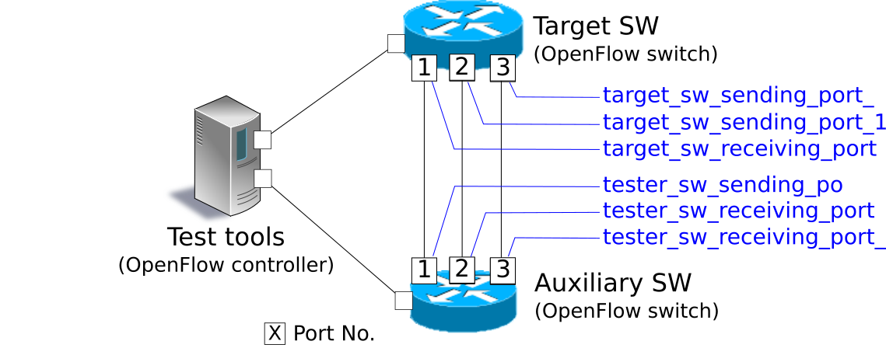

OpenFlow Switch Test Tool¶
This section explains how to use the test tool to verify the degree of compliance of an OpenFlow switch with the OpenFlow specifications.
Overview of Test Tool¶
This tool is used to verify the status of support by OpenFlow switch for the OpenFlow specification by conducting a flow entry and a meter entry registration/packet application to the test subject OpenFlow switch according to a test pattern file and comparing the result of processing by the OpenFlow switch of packet rewriting and transfer (or discard) against the expected processing result described in the test pattern file.
Currently, the supported OpenFlow versions are OpenFlow 1.0, OpenFlow 1.3 and OpenFlow 1.4. And this tool is compatible with FlowMod message, GroupMod message and MeterMod message tests.
| Test subject message | Corresponding parameters |
|---|---|
| FlowMod message | match (Excludes IN_PHY_PORT), actions (Excludes SET_QUEUE) |
| MeterMod message | All |
| GroupMod message | All |
“Packet Library” is used to confirm packet rewriting and results generation of packets to be applied.
Test execution image¶
The following shows an image of operation when you run the test tool. “flow entry or meter entry to be registered”, “application packet” and “expected processing result to” are described in the test pattern file. How to set up your environment for the tool execution is described later (refer to Tool execution environment)

Output image of test results¶
The specified test items of the test pattern file are run in order and test results (OK / ERROR) are output. If a test result is ERROR, details of the error are also output. In addition, the test report of the number of OK / ERROR and the breakdown of ERRORs through the whole test are output.
--- Test start ---
match: 29_ICMPV6_TYPE
ethernet/ipv6/icmpv6(type=128)-->'icmpv6_type=128,actions=output:2' OK
ethernet/ipv6/icmpv6(type=128)-->'icmpv6_type=128,actions=output:CONTROLLER' OK
ethernet/ipv6/icmpv6(type=135)-->'icmpv6_type=128,actions=output:2' OK
ethernet/vlan/ipv6/icmpv6(type=128)-->'icmpv6_type=128,actions=output:2' ERROR
Received incorrect packet-in: ethernet(ethertype=34525)
ethernet/vlan/ipv6/icmpv6(type=128)-->'icmpv6_type=128,actions=output:CONTROLLER' ERROR
Received incorrect packet-in: ethernet(ethertype=34525)
match: 30_ICMPV6_CODE
ethernet/ipv6/icmpv6(code=0)-->'icmpv6_code=0,actions=output:2' OK
ethernet/ipv6/icmpv6(code=0)-->'icmpv6_code=0,actions=output:CONTROLLER' OK
ethernet/ipv6/icmpv6(code=1)-->'icmpv6_code=0,actions=output:2' OK
ethernet/vlan/ipv6/icmpv6(code=0)-->'icmpv6_code=0,actions=output:2' ERROR
Received incorrect packet-in: ethernet(ethertype=34525)
ethernet/vlan/ipv6/icmpv6(code=0)-->'icmpv6_code=0,actions=output:CONTROLLER' ERROR
Received incorrect packet-in: ethernet(ethertype=34525)
--- Test end ---
--- Test report ---
Received incorrect packet-in(4)
match: 29_ICMPV6_TYPE ethernet/vlan/ipv6/icmpv6(type=128)-->'icmpv6_type=128,actions=output:2'
match: 29_ICMPV6_TYPE ethernet/vlan/ipv6/icmpv6(type=128)-->'icmpv6_type=128,actions=output:CONTROLLER'
match: 30_ICMPV6_CODE ethernet/vlan/ipv6/icmpv6(code=0)-->'icmpv6_code=0,actions=output:2'
match: 30_ICMPV6_CODE ethernet/vlan/ipv6/icmpv6(code=0)-->'icmpv6_code=0,actions=output:CONTROLLER'
OK(6) / ERROR(4)
How to use¶
This section explains how to use the test tool.
Tool Execution Environment¶
The environment for test execution tools is described below.

As an auxiliary switch, an OpenFlow switch that can be used to perform following the operation successfully is required.
- Flow entry registration of actions=CONTROLLER
- Flow entry registration of measuring throughput
- Packet-In message transmission by flow entry of actions=CONTROLLER
- Packet transmission by Packet-Out message reception
Note
The source tree of Ryu offers an environment build script that allows realization of a tool execution environment on mininet that uses Open vSwitch as a test target switch.
ryu/tests/switch/run_mininet.py
A example script is described in “Test tool usage example”.
How To Run The Test Tool¶
The test tool is available on the source tree on Ryu.
Source code Explanation ryu/tests/switch/tester.py Test tool ryu/tests/switch/of10 Sample of test pattern file (For OpenFlow 1.0) ryu/tests/switch/of13 Sample of test pattern file (For OpenFlow 1.3) ryu/tests/switch/of14 Sample of test pattern file (For OpenFlow 1.4) ryu/tests/switch/run_mininet.py Test environment build script
The test tool is executed by the following command.
$ ryu-manager [--test-switch-target DPID] [--test-switch-tester DPID]
[--test-switch-target-version VERSION] [--test-switch-tester-version VERSION]
[--test-switch-dir DIRECTORY] ryu/tests/switch/tester.py
| Option | Explanation | Default value |
|---|---|---|
--test-switch-target |
Data path ID of test target switch | 0000000000000001 |
--test-switch-tester |
Data path ID of auxiliary switch | 0000000000000002 |
--test-switch-target-version |
OpenFlow version of test target switch (“openflow10”, “openflow13” or “openflow14” can be specified) | openflow13 |
--test-switch-tester-version |
OpenFlow version of auxiliary switch (“openflow10”, “openflow13” or “openflow14” can be specified) | openflow13 |
--test-switch-dir |
Directory path of test pattern file | ryu/tests/switch/of13 |
Note
Since the test tool is created as a Ryu application and inherits ryu.base.app_manager.RyuApp, it supports output of debugging information by the –verbose option, as with other Ryu applications.
After starting the test tool, when the auxiliary switch and test target switch are connected to the controller, the test starts based on the test pattern file that you specify. if the specified OpenFlow version is different from the OpenFlow version of connected switch, the test tool outputs the error messages and wait for a connection to be established with the specified version.
Test Tool Usage Example¶
The following is the procedure to execute the test tool using a sample test pattern and original test pattern file.
Procedure for Executing Sample Test Pattern¶
The following shows the procedure of using sample test pattern (ryu/tests/switch/of13) of the source tree of the Ryu to check the through operation of match/actions of FlowMod messages, MeterMod messages and GroupMod messages.
Note
As a sample test pattern, the source tree of Ryu offers a test pattern file for OpenFlow 1.0, OpenFlow 1.3 and OpenFlow 1.4 to check if each parameter that can be specified in the match/actions of FlowMod message, each parameter that in MeterMod messages and each parameter that in GroupMod messages works properly or not.
ryu/tests/switch/of10
ryu/tests/switch/of13
ryu/tests/switch/of14
In this procedure, the test environment is constructed using the test environment build script (ryu / tests / switch / run_mininet.py). Please refer to “Switching Hub ” for environment settings and the login method for usage of the VM image.
1 Building the test environment
Log in to the VM environment and run the test environment build script.
ryu@ryu-vm:~$ sudo ryu/ryu/tests/switch/run_mininet.pyExecution result of the net command is as follows.
mininet> net c0 s1 lo: s1-eth1:s2-eth1 s1-eth2:s2-eth2 s1-eth3:s2-eth3 s2 lo: s2-eth1:s1-eth1 s2-eth2:s1-eth2 s2-eth3:s1-eth3
2 Execution of the test tool
For execution of test tool, open xterm of controller.
mininet> xterm c0Execute test tool from xterm of “Node: c0 (root)” At this time, as the directory for the test pattern file, specify the directory of the sample test pattern (ryu/tests/switch/of13). Since the data path ID of the test target switch and auxiliary switch in the mininet environment has the default value of each option of –test-switch-target / –test-switch-tester, the option specification is omitted. Also, the OpenFlow version of the test target switch and auxiliary switch is set with the default value of each option of –test-switch-target-version / –test-switch-tester-version, this option specification is omitted too.
Node: c0:
root@ryu-vm:~$ ryu-manager --test-switch-dir ryu/ryu/tests/switch/of13 ryu/ryu/tests/switch/tester.pyWhen the tool is executed it appears as follows and waits until the test target switch and auxiliary switch is connected to the controller.
root@ryu-vm:~$ ryu-manager --test-switch-dir ryu/ryu/tests/switch/of13/ ryu/ryu/tests/switch/tester.py loading app ryu/ryu/tests/switch/tester.py loading app ryu.controller.ofp_handler instantiating app ryu/ryu/tests/switch/tester.py of OfTester target_dpid=0000000000000001 tester_dpid=0000000000000002 Test files directory = ryu/ryu/tests/switch/of13/ instantiating app ryu.controller.ofp_handler of OFPHandler --- Test start --- waiting for switches connection...When the test target switch and auxiliary switch is connected to the controller, the test begins.
root@ryu-vm:~$ ryu-manager --test-switch-dir ryu/ryu/tests/switch/of13/ ryu/ryu/tests/switch/tester.py loading app ryu/ryu/tests/switch/tester.py loading app ryu.controller.ofp_handler instantiating app ryu/ryu/tests/switch/tester.py of OfTester target_dpid=0000000000000001 tester_dpid=0000000000000002 Test files directory = ryu/ryu/tests/switch/of13/ instantiating app ryu.controller.ofp_handler of OFPHandler --- Test start --- waiting for switches connection... dpid=0000000000000002 : Join tester SW. dpid=0000000000000001 : Join target SW. action: 00_OUTPUT ethernet/ipv4/tcp-->'actions=output:2' OK ethernet/ipv6/tcp-->'actions=output:2' OK ethernet/arp-->'actions=output:2' OK action: 11_COPY_TTL_OUT ethernet/mpls(ttl=64)/ipv4(ttl=32)/tcp-->'eth_type=0x8847,actions=copy_ttl_out,output:2' ERROR Failed to add flows: OFPErrorMsg[type=0x02, code=0x00] ethernet/mpls(ttl=64)/ipv6(hop_limit=32)/tcp-->'eth_type=0x8847,actions=copy_ttl_out,output:2' ERROR Failed to add flows: OFPErrorMsg[type=0x02, code=0x00] ...When all testing of the sample test pattern file under ryu/tests/switch/of13 is complete, the test tool ends.
<Reference> Sample test pattern file list¶
Offers the following test patterns for each version of OpenFlow 1.0, OpenFlow 1.3 and OpenFlow 1.4.
- registers flow entries corresponding to each setting in the match/actions and applies multiple patterns of packets that match (or do not match) flow entries.
- registers meter entries to drop or remark priority depending on band rate and applies packets continuously that match meter entries.
- registers group entries for flooding (type=ALL) or selecting output port automatically by a selection algorithm (type=SELECT) and applies packets continuously that match group entries.
For OpenFlow 1.0:
ryu/tests/switch/of10/action: 00_OUTPUT.json 06_SET_NW_SRC.json 09_SET_TP_SRC_IPv6_TCP.json 01_SET_VLAN_VID.json 07_SET_NW_DST.json 09_SET_TP_SRC_IPv6_UDP.json 02_SET_VLAN_PCP.json 08_SET_NW_TOS_IPv4.json 10_SET_TP_DST_IPv4_TCP.json 03_STRIP_VLAN.json 08_SET_NW_TOS_IPv6.json 10_SET_TP_DST_IPv4_UDP.json 04_SET_DL_SRC.json 09_SET_TP_SRC_IPv4_TCP.json 10_SET_TP_DST_IPv6_TCP.json 05_SET_DL_DST.json 09_SET_TP_SRC_IPv4_UDP.json 10_SET_TP_DST_IPv6_UDP.json ryu/tests/switch/of10/match: 00_IN_PORT.json 07_NW_PROTO_IPv4.json 10_TP_SRC_IPv6_TCP.json 01_DL_SRC.json 07_NW_PROTO_IPv6.json 10_TP_SRC_IPv6_UDP.json 02_DL_DST.json 08_NW_SRC.json 11_TP_DST_IPv4_TCP.json 03_DL_VLAN.json 08_NW_SRC_Mask.json 11_TP_DST_IPv4_UDP.json 04_DL_VLAN_PCP.json 09_NW_DST.json 11_TP_DST_IPv6_TCP.json 05_DL_TYPE.json 09_NW_DST_Mask.json 11_TP_DST_IPv6_UDP.json 06_NW_TOS_IPv4.json 10_TP_SRC_IPv4_TCP.json 06_NW_TOS_IPv6.json 10_TP_SRC_IPv4_UDP.jsonFor OpenFlow 1.3:
ryu/tests/switch/of13/action: 00_OUTPUT.json 20_POP_MPLS.json 11_COPY_TTL_OUT.json 23_SET_NW_TTL_IPv4.json 12_COPY_TTL_IN.json 23_SET_NW_TTL_IPv6.json 15_SET_MPLS_TTL.json 24_DEC_NW_TTL_IPv4.json 16_DEC_MPLS_TTL.json 24_DEC_NW_TTL_IPv6.json 17_PUSH_VLAN.json 25_SET_FIELD 17_PUSH_VLAN_multiple.json 26_PUSH_PBB.json 18_POP_VLAN.json 26_PUSH_PBB_multiple.json 19_PUSH_MPLS.json 27_POP_PBB.json 19_PUSH_MPLS_multiple.json ryu/tests/switch/of13/action/25_SET_FIELD: 03_ETH_DST.json 14_TCP_DST_IPv4.json 24_ARP_SHA.json 04_ETH_SRC.json 14_TCP_DST_IPv6.json 25_ARP_THA.json 05_ETH_TYPE.json 15_UDP_SRC_IPv4.json 26_IPV6_SRC.json 06_VLAN_VID.json 15_UDP_SRC_IPv6.json 27_IPV6_DST.json 07_VLAN_PCP.json 16_UDP_DST_IPv4.json 28_IPV6_FLABEL.json 08_IP_DSCP_IPv4.json 16_UDP_DST_IPv6.json 29_ICMPV6_TYPE.json 08_IP_DSCP_IPv6.json 17_SCTP_SRC_IPv4.json 30_ICMPV6_CODE.json 09_IP_ECN_IPv4.json 17_SCTP_SRC_IPv6.json 31_IPV6_ND_TARGET.json 09_IP_ECN_IPv6.json 18_SCTP_DST_IPv4.json 32_IPV6_ND_SLL.json 10_IP_PROTO_IPv4.json 18_SCTP_DST_IPv6.json 33_IPV6_ND_TLL.json 10_IP_PROTO_IPv6.json 19_ICMPV4_TYPE.json 34_MPLS_LABEL.json 11_IPV4_SRC.json 20_ICMPV4_CODE.json 35_MPLS_TC.json 12_IPV4_DST.json 21_ARP_OP.json 36_MPLS_BOS.json 13_TCP_SRC_IPv4.json 22_ARP_SPA.json 37_PBB_ISID.json 13_TCP_SRC_IPv6.json 23_ARP_TPA.json 38_TUNNEL_ID.json ryu/tests/switch/of13/group: 00_ALL.json 01_SELECT_IP.json 01_SELECT_Weight_IP.json 01_SELECT_Ether.json 01_SELECT_Weight_Ether.json ryu/tests/switch/of13/match: 00_IN_PORT.json 13_TCP_SRC_IPv6.json 26_IPV6_SRC.json 02_METADATA.json 14_TCP_DST_IPv4.json 26_IPV6_SRC_Mask.json 02_METADATA_Mask.json 14_TCP_DST_IPv6.json 27_IPV6_DST.json 03_ETH_DST.json 15_UDP_SRC_IPv4.json 27_IPV6_DST_Mask.json 03_ETH_DST_Mask.json 15_UDP_SRC_IPv6.json 28_IPV6_FLABEL.json 04_ETH_SRC.json 16_UDP_DST_IPv4.json 28_IPV6_FLABEL_Mask.json 04_ETH_SRC_Mask.json 16_UDP_DST_IPv6.json 29_ICMPV6_TYPE.json 05_ETH_TYPE.json 17_SCTP_SRC_IPv4.json 30_ICMPV6_CODE.json 06_VLAN_VID.json 17_SCTP_SRC_IPv6.json 31_IPV6_ND_TARGET.json 06_VLAN_VID_Mask.json 18_SCTP_DST_IPv4.json 32_IPV6_ND_SLL.json 07_VLAN_PCP.json 18_SCTP_DST_IPv6.json 33_IPV6_ND_TLL.json 08_IP_DSCP_IPv4.json 19_ICMPV4_TYPE.json 34_MPLS_LABEL.json 08_IP_DSCP_IPv6.json 20_ICMPV4_CODE.json 35_MPLS_TC.json 09_IP_ECN_IPv4.json 21_ARP_OP.json 36_MPLS_BOS.json 09_IP_ECN_IPv6.json 22_ARP_SPA.json 37_PBB_ISID.json 10_IP_PROTO_IPv4.json 22_ARP_SPA_Mask.json 37_PBB_ISID_Mask.json 10_IP_PROTO_IPv6.json 23_ARP_TPA.json 38_TUNNEL_ID.json 11_IPV4_SRC.json 23_ARP_TPA_Mask.json 38_TUNNEL_ID_Mask.json 11_IPV4_SRC_Mask.json 24_ARP_SHA.json 39_IPV6_EXTHDR.json 12_IPV4_DST.json 24_ARP_SHA_Mask.json 39_IPV6_EXTHDR_Mask.json 12_IPV4_DST_Mask.json 25_ARP_THA.json 13_TCP_SRC_IPv4.json 25_ARP_THA_Mask.json ryu/tests/switch/of13/meter: 01_DROP_00_KBPS_00_1M.json 02_DSCP_REMARK_00_KBPS_00_1M.json 01_DROP_00_KBPS_01_10M.json 02_DSCP_REMARK_00_KBPS_01_10M.json 01_DROP_00_KBPS_02_100M.json 02_DSCP_REMARK_00_KBPS_02_100M.json 01_DROP_01_PKTPS_00_100.json 02_DSCP_REMARK_01_PKTPS_00_100.json 01_DROP_01_PKTPS_01_1000.json 02_DSCP_REMARK_01_PKTPS_01_1000.json 01_DROP_01_PKTPS_02_10000.json 02_DSCP_REMARK_01_PKTPS_02_10000.jsonFor OpenFlow 1.4:
ryu/tests/switch/of14/action: 00_OUTPUT.json 20_POP_MPLS.json 11_COPY_TTL_OUT.json 23_SET_NW_TTL_IPv4.json 12_COPY_TTL_IN.json 23_SET_NW_TTL_IPv6.json 15_SET_MPLS_TTL.json 24_DEC_NW_TTL_IPv4.json 16_DEC_MPLS_TTL.json 24_DEC_NW_TTL_IPv6.json 17_PUSH_VLAN.json 25_SET_FIELD 17_PUSH_VLAN_multiple.json 26_PUSH_PBB.json 18_POP_VLAN.json 26_PUSH_PBB_multiple.json 19_PUSH_MPLS.json 27_POP_PBB.json 19_PUSH_MPLS_multiple.json ryu/tests/switch/of14/action/25_SET_FIELD: 03_ETH_DST.json 14_TCP_DST_IPv6.json 26_IPV6_SRC.json 04_ETH_SRC.json 15_UDP_SRC_IPv4.json 27_IPV6_DST.json 05_ETH_TYPE.json 15_UDP_SRC_IPv6.json 28_IPV6_FLABEL.json 06_VLAN_VID.json 16_UDP_DST_IPv4.json 29_ICMPV6_TYPE.json 07_VLAN_PCP.json 16_UDP_DST_IPv6.json 30_ICMPV6_CODE.json 08_IP_DSCP_IPv4.json 17_SCTP_SRC_IPv4.json 31_IPV6_ND_TARGET.json 08_IP_DSCP_IPv6.json 17_SCTP_SRC_IPv6.json 32_IPV6_ND_SLL.json 09_IP_ECN_IPv4.json 18_SCTP_DST_IPv4.json 33_IPV6_ND_TLL.json 09_IP_ECN_IPv6.json 18_SCTP_DST_IPv6.json 34_MPLS_LABEL.json 10_IP_PROTO_IPv4.json 19_ICMPV4_TYPE.json 35_MPLS_TC.json 10_IP_PROTO_IPv6.json 20_ICMPV4_CODE.json 36_MPLS_BOS.json 11_IPV4_SRC.json 21_ARP_OP.json 37_PBB_ISID.json 12_IPV4_DST.json 22_ARP_SPA.json 38_TUNNEL_ID.json 13_TCP_SRC_IPv4.json 23_ARP_TPA.json 41_PBB_UCA.json 13_TCP_SRC_IPv6.json 24_ARP_SHA.json 14_TCP_DST_IPv4.json 25_ARP_THA.json ryu/tests/switch/of14/group: 00_ALL.json 01_SELECT_IP.json 01_SELECT_Weight_IP.json 01_SELECT_Ether.json 01_SELECT_Weight_Ether.json ryu/tests/switch/of14/match: 00_IN_PORT.json 13_TCP_SRC_IPv6.json 26_IPV6_SRC.json 02_METADATA.json 14_TCP_DST_IPv4.json 26_IPV6_SRC_Mask.json 02_METADATA_Mask.json 14_TCP_DST_IPv6.json 27_IPV6_DST.json 03_ETH_DST.json 15_UDP_SRC_IPv4.json 27_IPV6_DST_Mask.json 03_ETH_DST_Mask.json 15_UDP_SRC_IPv6.json 28_IPV6_FLABEL.json 04_ETH_SRC.json 16_UDP_DST_IPv4.json 28_IPV6_FLABEL_Mask.json 04_ETH_SRC_Mask.json 16_UDP_DST_IPv6.json 29_ICMPV6_TYPE.json 05_ETH_TYPE.json 17_SCTP_SRC_IPv4.json 30_ICMPV6_CODE.json 06_VLAN_VID.json 17_SCTP_SRC_IPv6.json 31_IPV6_ND_TARGET.json 06_VLAN_VID_Mask.json 18_SCTP_DST_IPv4.json 32_IPV6_ND_SLL.json 07_VLAN_PCP.json 18_SCTP_DST_IPv6.json 33_IPV6_ND_TLL.json 08_IP_DSCP_IPv4.json 19_ICMPV4_TYPE.json 34_MPLS_LABEL.json 08_IP_DSCP_IPv6.json 20_ICMPV4_CODE.json 35_MPLS_TC.json 09_IP_ECN_IPv4.json 21_ARP_OP.json 36_MPLS_BOS.json 09_IP_ECN_IPv6.json 22_ARP_SPA.json 37_PBB_ISID.json 10_IP_PROTO_IPv4.json 22_ARP_SPA_Mask.json 37_PBB_ISID_Mask.json 10_IP_PROTO_IPv6.json 23_ARP_TPA.json 38_TUNNEL_ID.json 11_IPV4_SRC.json 23_ARP_TPA_Mask.json 38_TUNNEL_ID_Mask.json 11_IPV4_SRC_Mask.json 24_ARP_SHA.json 39_IPV6_EXTHDR.json 12_IPV4_DST.json 24_ARP_SHA_Mask.json 39_IPV6_EXTHDR_Mask.json 12_IPV4_DST_Mask.json 25_ARP_THA.json 41_PBB_UCA.json 13_TCP_SRC_IPv4.json 25_ARP_THA_Mask.json ryu/tests/switch/of14/meter: 01_DROP_00_KBPS_00_1M.json 02_DSCP_REMARK_00_KBPS_00_1M.json 01_DROP_00_KBPS_01_10M.json 02_DSCP_REMARK_00_KBPS_01_10M.json 01_DROP_00_KBPS_02_100M.json 02_DSCP_REMARK_00_KBPS_02_100M.json 01_DROP_01_PKTPS_00_100.json 02_DSCP_REMARK_01_PKTPS_00_100.json 01_DROP_01_PKTPS_01_1000.json 02_DSCP_REMARK_01_PKTPS_01_1000.json 01_DROP_01_PKTPS_02_10000.json 02_DSCP_REMARK_01_PKTPS_02_10000.json
Procedure for Executing Original Test Pattern¶
The following is the procedure to run the test tool by creating an original test pattern.
The following is an example of creating a test tool that checks if it has a function to process the match/actions required for OpenFlow switch to implement the router function.
1 Creating the test pattern file
It will test the following flow entry, which has a function for the router to forward packets according to the routing table, and check if it is working correctly.
match actions Destination IP address range “192.168.30.0/24” Rewrite the source MAC address to “aa:aa:aa:aa:aa:aa”.
Rewrite the destination MAC address to “bb:bb:bb:bb:bb:bb”
TTL decrement
Packet forwarding
Create a test pattern file to perform this test pattern.
The example is as follows.
Note
For more information about the test pattern file creation is described in “How to create a test pattern file”.
File name: sample_test_pattern.json
[
"sample: Router test",
{
"description": "static routing table",
"prerequisite": [
{
"OFPFlowMod": {
"table_id": 0,
"match": {
"OFPMatch": {
"oxm_fields": [
{
"OXMTlv": {
"field": "eth_type",
"value": 2048
}
},
{
"OXMTlv": {
"field": "ipv4_dst",
"mask": 4294967040,
"value": "192.168.30.0"
}
}
]
}
},
"instructions":[
{
"OFPInstructionActions": {
"actions":[
{
"OFPActionSetField":{
"field":{
"OXMTlv":{
"field":"eth_src",
"value":"aa:aa:aa:aa:aa:aa"
}
}
}
},
{
"OFPActionSetField":{
"field":{
"OXMTlv":{
"field":"eth_dst",
"value":"bb:bb:bb:bb:bb:bb"
}
}
}
},
{
"OFPActionDecNwTtl":{}
},
{
"OFPActionOutput": {
"port":2
}
}
],
"type": 4
}
}
]
}
}
],
"tests":[
{
"ingress":[
"ethernet(dst='22:22:22:22:22:22',src='11:11:11:11:11:11',ethertype=2048)",
"ipv4(tos=32, proto=6, src='192.168.10.10', dst='192.168.30.10', ttl=64)",
"tcp(dst_port=2222, option='\\x00\\x00\\x00\\x00', src_port=11111)",
"'\\x01\\x02\\x03\\x04\\x05\\x06\\x07\\x08\\t\\n\\x0b\\x0c\\r\\x0e\\x0f'"
],
"egress":[
"ethernet(dst='bb:bb:bb:bb:bb:bb',src='aa:aa:aa:aa:aa:aa',ethertype=2048)",
"ipv4(tos=32, proto=6, src='192.168.10.10', dst='192.168.30.10', ttl=63)",
"tcp(dst_port=2222, option='\\x00\\x00\\x00\\x00', src_port=11111)",
"'\\x01\\x02\\x03\\x04\\x05\\x06\\x07\\x08\\t\\n\\x0b\\x0c\\r\\x0e\\x0f'"
]
}
]
}
]
2 Building a test environment
Build a test environment using a test environment build script. Please refer to the execution procedure in “Procedure for Executing Sample Test Pattern”.
3 Executing the test tool
Execute the test tool from Xterm from the controller by specifying the original test pattern you just created. For –test-switch-dir option, you can also directly specify a file as well as a directory. In order to confirm the contents of packets sent and received, the –verbose option is also specified.
Node: c0:
root@ryu-vm:~$ ryu-manager --verbose --test-switch-dir ./sample_test_pattern.json ryu/ryu/tests/switch/tester.pyWhen the test target switch and auxiliary switch is connected to the controller, the test begins.
In log output of “dpid=0000000000000002 : receive_packet...”, you can see that the expected output packet set in egress packed of the test pattern file was sent. Note that only logs the test tool outputs are excerpted.
root@ryu-vm:~$ ryu-manager --verbose --test-switch-dir ./sample_test_pattern.json ryu/ryu/tests/switch/tester.py loading app ryu/tests/switch/tester.py loading app ryu.controller.ofp_handler instantiating app ryu.controller.ofp_handler of OFPHandler instantiating app ryu/tests/switch/tester.py of OfTester target_dpid=0000000000000001 tester_dpid=0000000000000002 Test files directory = ./sample_test_pattern.json --- Test start --- waiting for switches connection... dpid=0000000000000002 : Join tester SW. dpid=0000000000000001 : Join target SW. sample: Router test send_packet:[ethernet(dst='22:22:22:22:22:22',ethertype=2048,src='11:11:11:11:11:11'), ipv4(csum=53560,dst='192.168.30.10',flags=0,header_length=5,identification=0,offset=0,option=None,proto=6,src='192.168.10.10',tos=32,total_length=59,ttl=64,version=4), tcp(ack=0,bits=0,csum=33311,dst_port=2222,offset=6,option='\x00\x00\x00\x00',seq=0,src_port=11111,urgent=0,window_size=0), '\x01\x02\x03\x04\x05\x06\x07\x08\t\n\x0b\x0c\r\x0e\x0f'] egress:[ethernet(dst='bb:bb:bb:bb:bb:bb',ethertype=2048,src='aa:aa:aa:aa:aa:aa'), ipv4(csum=53816,dst='192.168.30.10',flags=0,header_length=5,identification=0,offset=0,option=None,proto=6,src='192.168.10.10',tos=32,total_length=59,ttl=63,version=4), tcp(ack=0,bits=0,csum=33311,dst_port=2222,offset=6,option='\x00\x00\x00\x00',seq=0,src_port=11111,urgent=0,window_size=0), '\x01\x02\x03\x04\x05\x06\x07\x08\t\n\x0b\x0c\r\x0e\x0f'] packet_in:[] dpid=0000000000000002 : receive_packet[ethernet(dst='bb:bb:bb:bb:bb:bb',ethertype=2048,src='aa:aa:aa:aa:aa:aa'), ipv4(csum=53816,dst='192.168.30.10',flags=0,header_length=5,identification=0,offset=0,option=None,proto=6,src='192.168.10.10',tos=32,total_length=59,ttl=63,version=4), tcp(ack=0,bits=0,csum=33311,dst_port=2222,offset=6,option='\x00\x00\x00\x00',seq=0,src_port=11111,urgent=0,window_size=0), '\x01\x02\x03\x04\x05\x06\x07\x08\t\n\x0b\x0c\r\x0e\x0f'] static routing table OK --- Test end ---Actual flow entries registered in the OpenFlow switch are shown below. You can see that packets applied by the test tool match the flow entry and n_packets has been incremented.
Node: s1:
root@ryu-vm:~# ovs-ofctl -O OpenFlow13 dump-flows s1 OFPST_FLOW reply (OF1.3) (xid=0x2): cookie=0x0, duration=56.217s, table=0, n_packets=1, n_bytes=73, priority=0,ip,nw_dst=192.168.30.0/24 actions=set_field:aa:aa:aa:aa:aa:aa->eth_src,set_field:bb:bb:bb:bb:bb:bb->eth_dst,dec_ttl,output:2
How to create a test pattern file¶
A test pattern file is a text file that has a ”.json” extension. It is described using the following format.
[
"xxxxxxxxxx", # Test item name
{
"description": "xxxxxxxxxx", # Description of the test content
"prerequisite": [
{
"OFPFlowMod": {...} # Flow entry, Meter entry or Group entry to register
}, # (Describe OFPFlowMod, OFPMeterMod or OFPGroupMod
{ # of Ryu in json format)
"OFPMeterMod": {...} # If the expected processing result is
}, # packet transfer (actions=output),
{ # specify "2" as the output port number.
"OFPGroupMod": {...} # If the expected processing result is
}, # packet transfer (actions=output) in Group entry,
{...} # specify "2" or "3" as the output port number.
],
"tests": [
{
# Packet to be applied
# Depending on the packets are applied just once or continuously,
# describe either (A) or (B)
# (A) Apply a paket
"ingress": [
"ethernet(...)", # (Describe in format of Ryu packet library constructor)
"ipv4(...)",
"tcp(...)"
],
# (B) Apply pakets continuously during some period
"ingress": {
"packets":{
"data":[
"ethernet(...)", # the same as (A)
"ipv4(...)",
"tcp(...)"
],
"pktps": 1000, # The number of the applied packets per second
"duration_time": 30 # The time of packets application (seconds)
}
},
# Expected processing results
# Depending on the type of processing results,
# describe either (a), (b), (c) or (d)
# (a) Confirmation test of packet transfer (actions=output:X)
"egress": [ # Expected transfer packet
"ethernet(...)",
"ipv4(...)",
"tcp(...)"
]
# (b) Confirmation test of Packet-In (actions=CONTROLLER)
"PACKET_IN": [ # Expected Packet-In data
"ethernet(...)",
"ipv4(...)",
"tcp(...)"
]
# (c) Confirmation test of table-miss
"table-miss": [ # flow table ID that is expected to be table-miss
0
]
# (d) Confirmation test of packet transfer throughput (actions=output:X)
"egress":[
"throughput":[
{
"OFPMatch":{ # Match to measure throughput
... # registered in flow entry of
}, # auxiliary switch
"kbps":1000 # (Describe in KBPS)
},
{...},
{...}
]
]
},
{...},
{...}
]
}, # Test 1
{...}, # Test 2
{...} # Test 3
]
By description of “(B) Apply pakets continuously during some period” as packet to be applied and “(d) Confirmation test of packet transfer throughput (actions=output:X)” as expected processing results, you can measure the throughput of the test target switch.
For the meaning of the number of input / output port number that you specify in the test pattern file, please refer to “<Reference> Transfer path of the applied packet”.
<Reference> Transfer path of the applied packet¶
Use of the port of the test target switch and auxiliary switch is described below.
{kind=link}
Transfer path of the applied packet in the case of FlowMod message / MeterMod message test is as follows.
- The auxiliary switch sends the packet from tester_sw_sending_port(Port No.1).
- The test target switch receives the packet from target_sw receiving_port(Port No.1).
- The test target switch resends the packet from target_sw_sending_port_1(Port No.2).
- The auxiliary switch receives the packet from tester_sw_receiving_port_1(Port No.2).

Transfer path of the applied packet in the case of GroupMod message test is as follows.
- The auxiliary switch sends the packet from tester_sw_sending_port(Port No.1).
- The test target switch receives the packet from target_sw receiving_port(Port No.1).
- The test target switch resends the packet from target_sw_sending_port_1(Port No.2) or target_sw_sending_port_2(Port No.3).
- The auxiliary switch receives the packet from tester_sw_receiving_port_1(Port No.2) or tester_sw_receiving_port_2(Port No.3).
{kind=link}
As shown above, only the test of GroupMod message, the test tool is to use the tester_sw_receiving_port_2 and target_sw_sending_port_2.
How to change the port number¶
If you want to use the other port number which differ from Tool Execution Environment, you can specify the port number in the options when this tool is started. Option to change the port number is described below.
| Option | Explanation | Default value |
|---|---|---|
--test-switch-target_recv_port |
Port number of target switch receiving port | 1 |
--test-switch-target_send_port_1 |
Port number of target switch sending port 1 | 2 |
--test-switch-target_send_port_2 |
Port number of target switch sending port 2 | 3 |
--test-switch-tester_send_port |
Port number of auxiliary switch sending port | 1 |
--test-switch-tester_recv_port_1 |
Port number of auxiliary switch receiving port 1 | 2 |
--test-switch-tester_recv_port_2 |
Port number of auxiliary switch receiving port 2 | 3 |
If you want to change the port number by the above options, please be aware that there is a need to change the value of the port number of the test pattern file to the test tool before starting.
<Reference>The supplementary information on how to create a test pattern file¶
If you describe the name of an option argument (e.g. “target_send_port_1”) in test files, the test tool sets the argument value in the port number.
For example, write a test pattern file as follows.
"OFPActionOutput": { "port":"target_send_port_1" }Next, run the test tool with the option to change the port number.
root@ryu-vm:~$ ryu-manager --test-switch-target_send_port_1 30 ryu/ryu/tests/switch/tester.pyThen, the test tool understands the test pattern file as follows.
"OFPActionOutput": { "port":30 }This makes it possible to determine the value of the port number for the test pattern file when starting the test tool.
List of Error Messages¶
The following is a list of error messages that can be output with this tool.
| Error message | Description |
|---|---|
| Failed to initialize flow tables: barrier request timeout. | Failed to delete the flow entry of the previous test at the tested SW (time-out of Barrier Request) |
| Failed to initialize flow tables: [err_msg] | Failed to delete the flow entry of the previous test at the tested SW (error message received for FlowMod) |
| Failed to initialize flow tables of tester_sw: barrier request timeout. | Failed to delete the flow entry of the previous test at Auxiliary SW (time-out of Barrier Request) |
| Failed to initialize flow tables of tester_sw: [err_msg] | Failed to delete the flow entry of the previous test at Auxiliary SW (error message received for FlowMod) |
| Failed to add flows: barrier request timeout. | Failed to register the flow entry of the tested SW (time-out of Barrier Request) |
| Failed to add flows: [err_msg] | Failed to register the flow entry of the tested SW (error message is received for FlowMod) |
| Failed to add flows to tester_sw: barrier request timeout. | Failed to register the flow entry of Auxiliary SW (time-out of Barrier Request) |
| Failed to add flows to tester_sw: [err_msg] | Failed to register the flow entry of Auxiliary SW (error message is received for FlowMod) |
| Failed to add meters: barrier request timeout. | Failed to register the meter entry of the tested SW (time-out of Barrier Request) |
| Failed to add meters: [err_msg] | Failed to register the meter entry of the tested SW (error message is received for MeterMod) |
| Failed to add groups: barrier request timeout. | Failed to register the group entry of the tested SW (time-out of Barrier Request) |
| Failed to add groups: [err_msg] | Failed to register the group entry of the tested SW (error message is received for GroupMod) |
| Added incorrect flows: [flows] | Flow entry registration confirmation error at the tested SW (unexpected flow entry is registered) |
| Failed to add flows: flow stats request timeout. | Flow entry registration confirmation failure at the tested SW (time-out of FlowStats Request) |
| Failed to add flows: [err_msg] | Flow entry registration confirmation failure at the tested SW (error message received for FlowStats Request) |
| Added incorrect meters: [meters] | Meter entry registration confirmation error at the tested SW (unexpected meter entry is registered) |
| Failed to add meters: meter config stats request timeout. | Meter entry registration confirmation failure at the tested SW (time-out of MeterConfigStats Request) |
| Failed to add meters: [err_msg] | Meter entry registration confirmation failure at the tested SW (error message received for MeterConfigStats Request) |
| Added incorrect groups: [groups] | Group entry registration confirmation error at the tested SW (unexpected group entry is registered) |
| Failed to add groups: group desc stats request timeout. | Group entry registration confirmation failure at the tested SW (time-out of GroupDescStats Request) |
| Failed to add groups: [err_msg] | Group entry registration confirmation failure at the tested SW (error message received for GroupDescStats Request) |
| Failed to request port stats from target: request timeout. | Failed to acquire PortStats of the tested SW (time-out of PortStats Request) |
| Failed to request port stats from target: [err_msg] | Failed to acquire PortStats of the tested SW (error message received for PortStats Request) |
| Failed to request port stats from tester: request timeout. | Failed to acquire PortStats of Auxiliary SW (time-out of PortStats Request) |
| Failed to request port stats from tester: [err_msg] | Failed to acquire PortStats of Auxiliary SW (error message received for PortStats Request) |
| Received incorrect [packet] | Reception error of output expected packets (received different packets) |
| Receiving timeout: [detail] | Reception error of expected output packets (time-out) |
| Failed to send packet: barrier request timeout. | Failed to apply packet (time-out of Barrier Request) |
| Failed to send packet: [err_msg] | Failed to apply packet (error message received for Packet-Out) |
| Table-miss error: increment in matched_count. | table-miss check error (matches the flow) |
| Table-miss error: no change in lookup_count. | table-miss check error (packet has not been processed by the flow table being checked) |
| Failed to request table stats: request timeout. | Failed to check table-miss (time-out of TableStats Request) |
| Failed to request table stats: [err_msg] | Failed to check table-miss (error message received for TableStats Request) |
| Added incorrect flows to tester_sw: [flows] | Flow entry registration confirmation error at Auxiliary SW (unexpected flow entry is registered) |
| Failed to add flows to tester_sw: flow stats request timeout. | Flow entry registration confirmation failure at Auxiliary SW (time-out of FlowStats Request) |
| Failed to add flows to tester_sw: [err_msg] | Flow entry registration confirmation failure at Auxiliary SW (error message received for FlowStats Request) |
| Failed to request flow stats: request timeout. | Flow entry registration confirmation failure at Auxiliary SW when measuring throughput (time-out of FlowStats Request) |
| Failed to request flow stats: [err_msg] | Flow entry registration confirmation failure at Auxiliary SW when measuring throughput (error message received for FlowStats Request) |
| Received unexpected throughput: [detail] | Received result of measuring throughput far from expected |
| Disconnected from switch | Disconnected from the tested SW or Auxiliary SW |